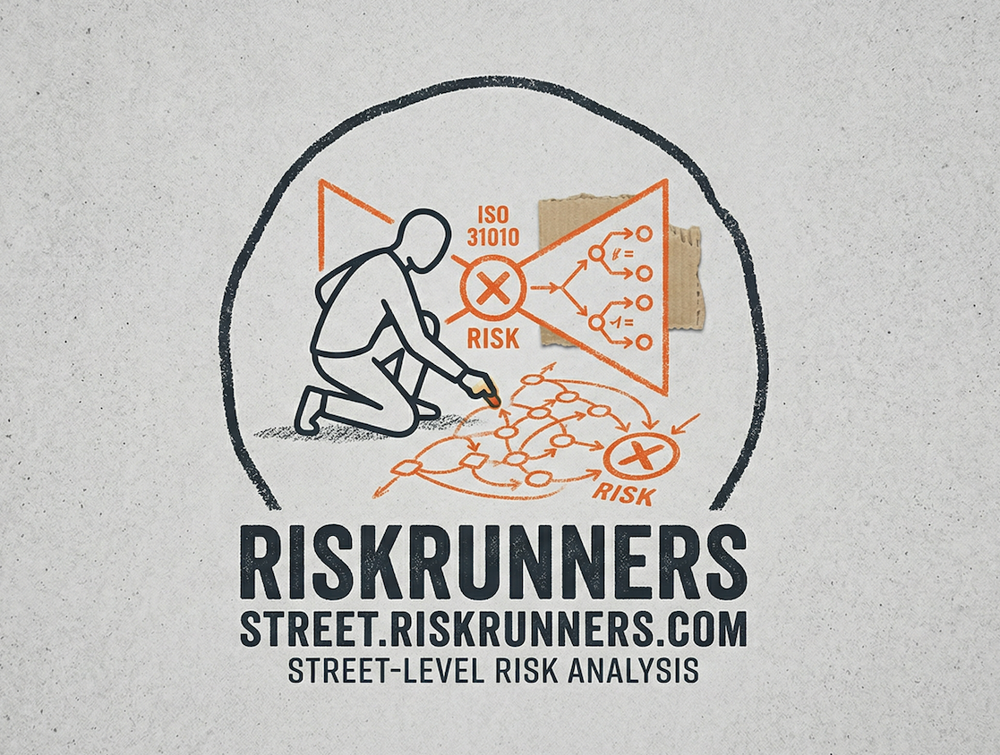

Risk assessment and estimation techniques — taught not in boardrooms but on street corners, in dive bars, and across kitchen tables.
Every technique in ISO 31010 — from Bow Tie Analysis to Markov Chains — was built to help people make better decisions under uncertainty. And every tool in Street-Fighting Mathematics — from dimensional analysis to pictorial proofs — was built to cut through complex problems with educated guessing and opportunistic thinking.
Street Math puts them both on the pavement. Each screenplay drops a real technique into an everyday scenario — a bouncer working the door, a mechanic sizing up a bad engine, a food cart vendor estimating crowd size. The math is real. The characters just speak it differently.
Two traditions. Sixteen stories. All street-level.
Ten risk assessment techniques through storytelling. Click any card to read the full 10-page screenplay.
Six tools from Sanjoy Mahajan's Street-Fighting Mathematics — dimensional analysis, easy cases, lumping, pictorial proofs, successive approximation, and analogy. The art of educated guessing, taught by characters who don't have time for exact solutions.
Six problem-solving weapons disguised as screenplays. Click any card to read.